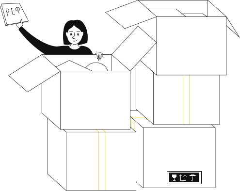
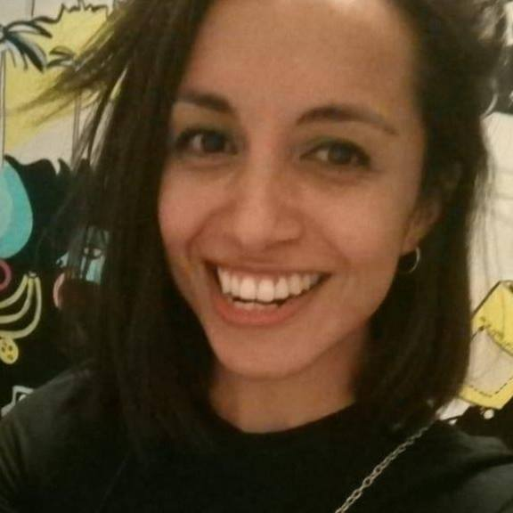

Bienvenidos a mi portafolio
¡Hola! Este es mi portafolio, aquí puedes ver mis avances y descargar mi CV.
Me especializo en crear, diseñar y rediseñar sitios web profesionales,y en conseguir una experiencia de navegación simple, atractiva y satisfactoria para el usuario.
Me apasiona el arte, el diseño; y actualmente estoy en busca de oportunidades laborales como diseñadora web o desarrolladora web front end. Estoy disponible para trabajar en proyectos como freelancer.
¿Tienes algún proyecto, idea o problema que quieras discutir?
Hablemos!Sobre mí
-
Estoy búsqueda de oportunidades para desarrollar y diseñar sitios web según requerimientos, así como actualizar, rediseñar, y crear contenido para medios digitales.
Realizo Diseños de Interfaces intuitivos y atractivos, maqueteando con HTML5, CSS3, ajustados a los estándares de la W3C, y haciendo uso de herramientas como Dreamweaber, Photoshop, Ilustrator, y XD.
Poseo conocimientos en Arquitectura de Información, y diseño UX lo que me permite analizar a los usuarios, sus contextos y comportamientos, para crear las mejores soluciones para cada proyecto y cliente.
Habilidades profesionales
Arquitectura de InformaciónDiseño de Interfaz UX/UIDesarrollo Front-EndSEOImplementación de Frameworks -
Cuento con competencias y conocimientos tales como:
Lenguajes
HTML/HTML590%CSS/CSS390%JS/jQuery60%PHP65%Frameworks
WordPressBootstrapHerramientas
AdobeMe siento cómoda trabajando con HTML5, CSS3 y jQuery, tengo conocimientos para crear sitios responsive y me entusiasma la idea de hacer de la web un lugar más amigable para todos sus usuarios. Uso Bootstrap, Wordpress, preprocesadores CSS como SASS y programas como(aunque muchos me odien por decir esto) Dreamweaver.
A diario busco nuevos conocimientos, actividad indispensable para profesionales de este sector tan dinámico en el que nunca terminas de aprender.
 -

Soy una persona con gran atención al detalle, apasionada por mi trabajo y autocrítica. Estoy en constante formación contínua, y además poseo formación en diversas áreas. Estudié Obstetricia y Puericultura en la Universidad de Chile, tengo conocimientos en Química y Farmacia (Pregrado- U. de Chile) y estoy en proceso de retomar mis estudios de Artes Visuales, en la Universidad Católica de Chile.
90%
Motivación80%
Autocrítica95%
Pasión
Servicios
Diseño web
Diseño páginas web atractivas, que se adaptan a las necesidades y expectativas del usuario. Intentando en todo momento adecuar el diseño a una lógica acorde a cada proyecto y sus requerimientos.
Desarrollo web
Consigo diseños atractivos que funcionan a la perfección en todos los navegadores, con un carácter funcional, adaptado a los estándares W3C y con interactividad que mejora la interfaz y la experiencia del usuario.
Diseño UX
Me especializo en la crear sitios web centrados en el usuario. Trabajo mejorando la experiencia digital, dando soluciones a problemas complejos u optimizando procesos, haciéndolos más sencillos e intuitivos.
Contacto
No soy amiga de los «overpromise», ni de hacer milagros, pero hago lo mejor que puedo para conseguir resultados.
Si tienes un proyecto en mente y estás interesado en contratar mis servicios, no dudes en contactarte conmigo. Puedes enviarme un correo a: yanara.catrilelbun@gmai.cl, o rellenar el formulario y responderé a la mayor brevedad posible.
O si prefieres, también podemos conectar mediante redes sociales: